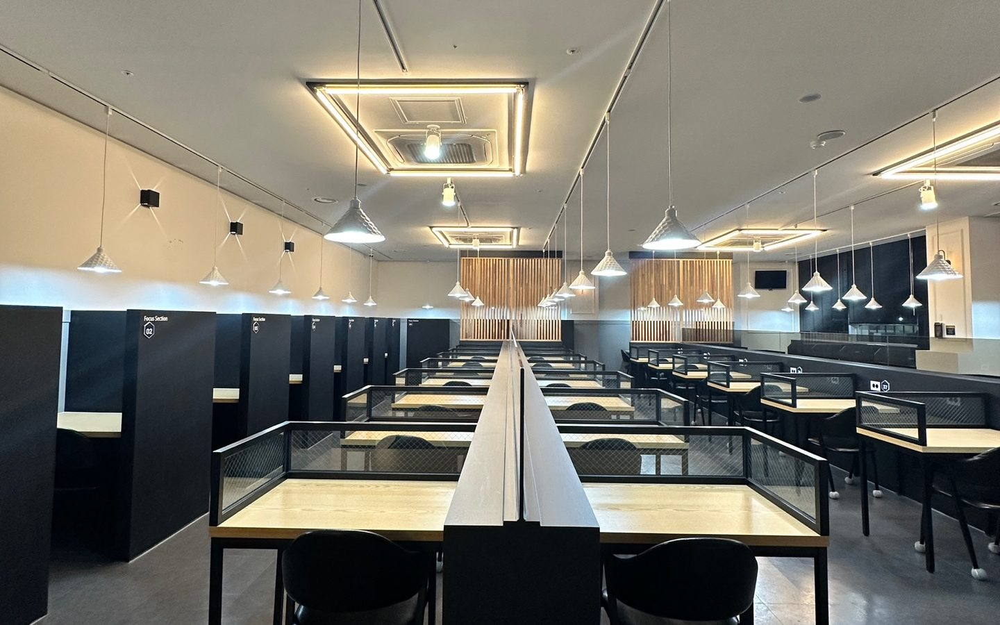

숫자로 보는 강한선배
강한선배 학생들의
입시 결과입니다.
겨울 두 달을 자리만 지키다 보내면 남는 게 없습니다. 아래는 재원생들의 실제 기록입니다.
인서울 대학 합격
재원생 3명 중 2명이 인서울 대학에 합격했습니다.
성적 상승
재원생 10명 중 9명은 성적이 올랐습니다.
최상위 의약학 계열
의·치·약합격생이 여러 명 나왔습니다.
2026학년도 강한선배 2기 합격 · 재학 대학
타이트한 관리가 오히려 좋았어요. 매 교시 확인받다 보니 도망갈 곳이 없었고, 고2 11월 모의고사보다 3월 모의고사 성적이 크게 올랐어요.
혼자서는 절대 못 지켰을 겨울 루틴을 두 달 내내 지키게 해 줬어요. 공부 습관이 잡힌 채로 3월을 시작하니 1년이 달라졌어요.
실전 훈련
매달 한 번,
수능처럼.
매달 대성 더프리미엄 모의고사를 원내 시험실에서 봅니다. 시간표, 수험표, 가채점표까지 수능 날과 똑같이 맞추고, 틀린 문제는 질의응답과 담임 멘토링에서 다시 짚고 넘어갑니다.
- 신청앱에서 신청하면 원내 시험실 자리 배정
- 실전 응시수능과 같은 시간표 · 수험표 · 가채점표
- 성적 관리회차별 성적 기록 · 틀린 문제는 질의응답과 멘토링에서

강한선배 앱
강한선배 전용 앱으로
두 달을 빈틈없이 관리합니다.
출결과 상벌점, 과제, 질의응답, 도시락 신청까지 윈터스쿨 두 달의 관리가 모두 전용 앱에서 이뤄지고, 학부모님도 같은 앱에서 바로 확인하십니다. 아래는 모두 실제 앱 화면입니다.
밀착 학습 관리
하루 15시간 동안
이렇게 관리합니다.
카드를 누르면 실제 운영 방식과 앱 화면을 볼 수 있습니다. 출결, 벌점, 멘토링 기록은 학부모님께도 모두 공유됩니다.
등록 안내 · 좌석 한정
좌석이 차는 대로 마감됩니다.
순번부터 확보하세요.
수강 기간 2027년 1/1(금) ~ 2/28(일) · 설 연휴 휴무 없음 · 2개월 과정
등록 대기금
11월 중에 납부하시면 대기 순번이 확정됩니다. 나머지 118만 원은 입실이 확정된 뒤 완납하시면 됩니다.
수강 금액 (2개월)
2개월 총 138만 원 · 지역화폐 결제 가능
기존 재원생
2026년 12월 기준으로 강한선배 관리형 독서실을 이용 중인 재원생은 따로 대기 등록하지 않아도 자동으로 등록이 연장됩니다.
온라인 사전 예약
대기 등록을 남겨 주시면 등록 안내 연락을 드립니다.
대기금 납부
11월 중에 입학 대기금 20만 원을 내시면 순번이 확정됩니다.
입학 전 OT
가능하면 참석해 주세요. 일정이 안 맞으면 1월 입실 첫 주에 차례로 진행합니다.
1/1 입실
담임 멘토를 정하고 학습 계획을 잡은 다음, 두 달 관리를 시작합니다.
자주 묻는 질문
궁금한 점이
남아 있으신가요?
여기 없는 내용은 전화로 물어보셔도 되고, 온라인 사전 예약 후 상담 때 말씀해 주셔도 됩니다.